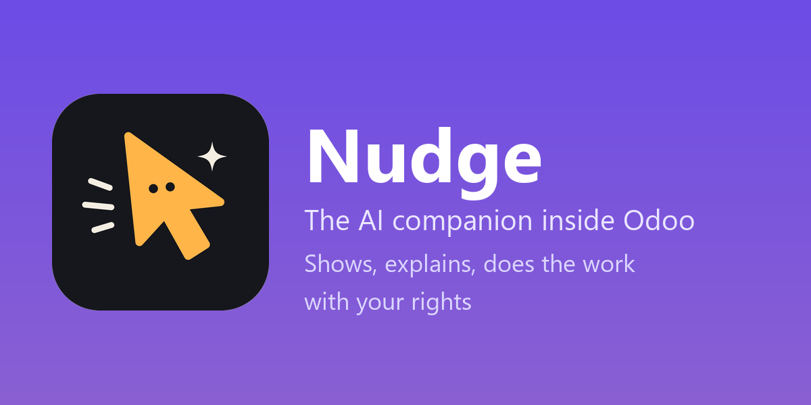
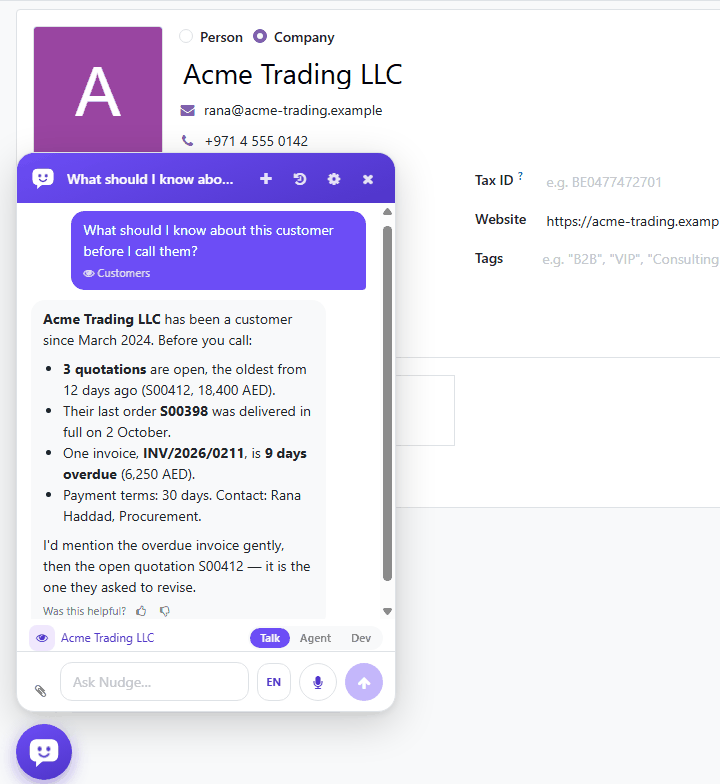
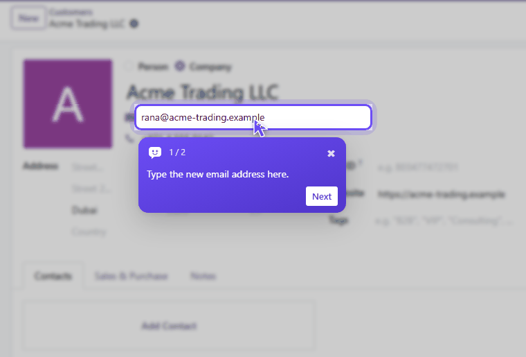
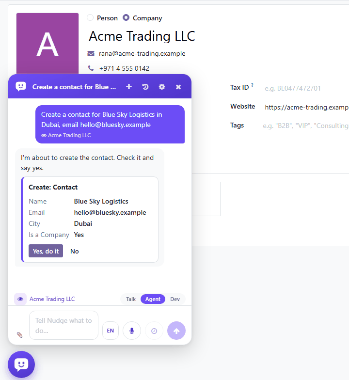
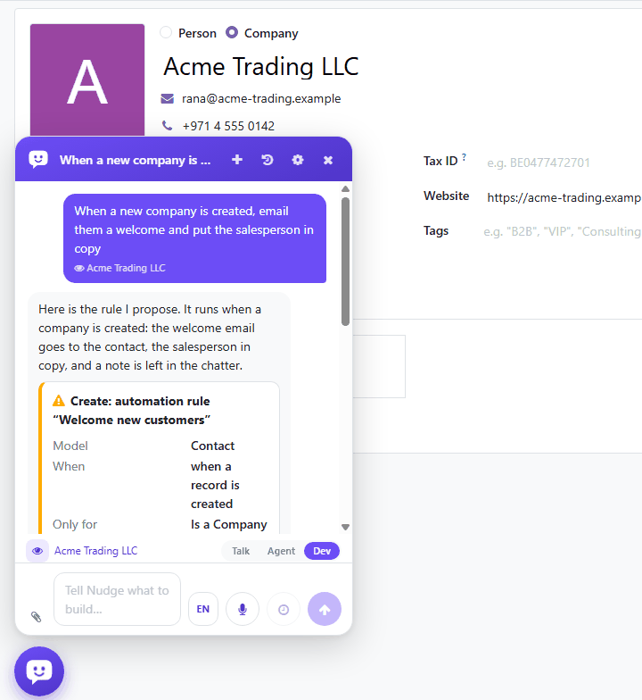
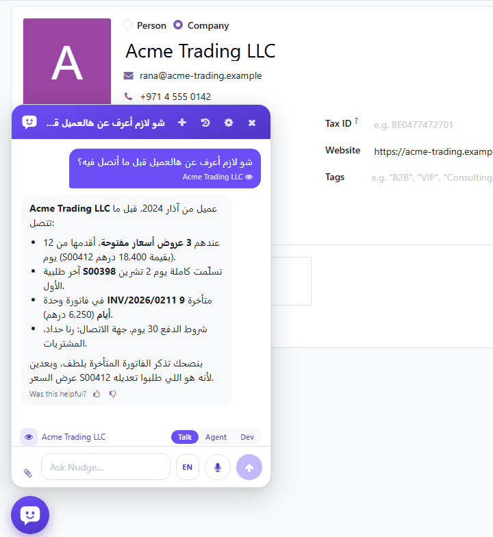
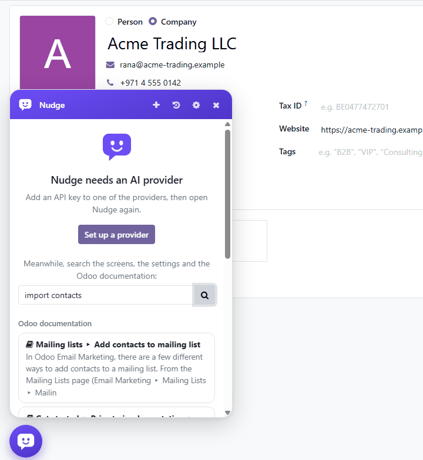

Open any record and ask. Nudge sees the screen you are on when you send: the record, its fields and their values, unsaved changes included, its buttons and tabs. Only what you are allowed to see.
It answers as a senior Odoo implementer, accountant, HR, sales or inventory person would, from your data and from the official documentation of Odoo that comes with the module (1067 pages, nothing fetched from outside), gives the link of the page, and says "I don't know" rather than guessing.
Ask "how do I confirm this order?" or "how do I open the attendance report?" and choose On the screen: Nudge's pointer travels to each field, button, tab and menu, presses it for show, and explains the step in a box while the rest of the screen is dimmed.
The next step comes when you have done the current one. A field hidden in a closed tab is reached through the tab; "take me to the quotations" opens the screen, among the menus you can open.


In Agent mode it finds records by what you call them, filters and groups your lists, counts and sums, creates and changes records, presses buttons, approves, confirms and validates: with your access rights, your record rules and your companies.
Before every change, a card shows the fields as they are and as they will be, or the button it is about to press and on which record. Yes, do it or No. It never deletes.
Press the clock instead of Send and the work goes on in the background: a message tells you when Nudge needs your yes, and when it is done, from any screen.
Developer mode, off by default. Switched on, administrators get a third mode, Dev, where Nudge builds as a senior Odoo developer would: automation rules, server actions, emails sent on an event, scheduled actions, buttons on a form, new fields, changes to a screen, PDF reports.
It asks what it needs to know (who receives the email, who is in copy, and proposes the text), reads what already runs on the model, explains what it is about to make, and shows everything on the card: the trigger, the full code, the recipients, the difference a change makes to a screen. Nothing is made before you say yes.
nudge_custom, listed under Settings ‣ Technical ‣ External Identifiers, and stays when Nudge is uninstalled.

Arabic and English, right to left included, whatever the language of the interface. Syrian, Egyptian, Gulf Arabic and Arabizi understood, names of buttons in the middle of an Arabic sentence included.
Talk instead of typing: hold the shortcut or press the microphone, it stops when you stop talking and your words appear in the chat. Dictate in the fields of Odoo. Have the answers read aloud.
Until an AI provider is set up, the panel offers a search instead of a conversation: the screens you can open, the settings of your apps (for administrators) and the official Odoo documentation, by a few words. The pointer shows the way to a screen or a setting it found.
No AI is asked and nothing leaves the database. The conversation takes over the moment a provider is ready.

Press the thumbs-up on a good explanation. Once a manager approves it, the same question of a colleague is answered at once, marked as remembered, with a button Ask the AI instead. Zero tokens.
/why says why a form cannot be saved, /field customer what a field is, /here what the screen is. Read from Odoo's own metadata, also in Arabic: /لماذا /حقل /هنا.
A scheduled task that is a rule, not a prompt: a record type, a filter, a count, sum or average, and when to report. It runs as its owner, read-only, and answers in the top bar and by email.
One company setting, and a tick Runs on Our Own Server on a provider. Nothing is sent to any other provider; search, commands, tours and remembered answers keep working.
A manager records a task once with Record a tour; everyone replays it with the pointer, from /tour. Eight ready tours for Sales, Contacts, Products, Purchase, Inventory and Accounting.
/health or Nudge, Health Check: eleven small checks for duplicates, missing setup, risky rights and stuck jobs, each with a severity, a count and a Show me button. Weekly too. Changes nothing.
Attach a CSV or Excel file and type /import: the columns are matched to the fields, the dry run lists the errors by row and column, and you get a corrected CSV for Odoo's Import screen.
Open a screen, find a record, count, create a contact or a quotation, change a field, press a button: understood by rules in Modern Standard, Gulf, Egyptian, Iraqi, Levantine, Maghrebi, Sudanese and Yemeni Arabic, Arabizi and English. Every change still waits for your yes.
An optional model of about 135 MB runs on the CPU of your server and finds the documentation and your files by meaning, so a question in Arabic finds an English page. It finds; it does not answer. When an administrator switches it on, the model is downloaded once from Hugging Face; nothing of the database is sent.
Nudge , Health Check , Compliance lists the checklists for the country of the company, each with a Run: United Arab Emirates, Saudi Arabia, Qatar, Kuwait, Bahrain, Oman and Egypt. Deterministic checks, no AI, nothing changed: VAT taxes at the rate of the country and on the products, tax numbers (TRN, VAT) on the company and the customers, the invoice layout, e-invoicing modules and fields (ZATCA, ETA), Arabic, WPS readiness and employee fields. Each finding has a severity, an explanation with the official reference in English and Arabic, and Show me; results are kept with the health reports. It is a checklist, not legal advice: confirm with the authority (it says so on the screen, in every pack and on every finding). A country is a JSON file (data/compliance, or data/nudge_compliance in any module), refused at load with a clear error if it names an unknown check.
On a database nobody has set up (one company with the default name, no chart of accounts, few users) an administrator is offered Set up this database with me, also under Settings , Nudge , First Setup and by sentence in English or any Arabic dialect. Nudge asks one thing at a time (company, country, currency, languages, time zone, logo, apps for the kind of business, other companies, warehouses, users with a role, fiscal year, number formats) and shows a card with the exact changes before each; the country card names the fiscal localisation module (l10n_ae, l10n_sa, l10n_eg...) that Odoo loads its chart of accounts with. Users get an invitation email only if you ask; what was made is archived by Undo, never deleted; the outgoing mail server is only pointed at. With no provider the answers are read by rules.
A card in the panel shows a new person (first 14 days, or put in training by a manager) how many of the key screens of their role they opened and the tours still to take; Nudge , Training shows the managers who is where. Only the screens opened are kept. A company switch in Settings turns the coach off.
/changes (or "who changed this price?" in any dialect) lists the tracked changes of a record, newest first. Restore the old value puts one field back, with your rights, after a yes; nothing is deleted. A state, a posted entry or a done stock move is never put back, and the answer says why. The restore tools themselves are in Agent mode.
Nudge , Health Check , Before an Upgrade: an administrator picks the series (17 to 18, 18 to 19, 19 to 20) and gets a read-only report of what will break or needs a decision: Studio objects and the logic they hide, renamed or removed fields, attrs/states, custom modules without a migration. Some entries say "confirm on staging"; the 20.0 list holds generic checks only.
A manager exports tours, rule tasks, presets, command words and approved answers as one checksummed file (Nudge , Configuration , Recipes) and imports it, after a review step, on another database.
Nudge , Configuration , Recipes , Marketplace lists the recipes of public index.json indexes (format in doc/recipes-index.md), HTTPS only, each download checked against the checksum of the index. It is not an AI call: the only thing the index sees is your server's address. The default source is off and no index is fetched by itself until an administrator enables a source and, for the weekly refresh, ticks it.
Questions asked are counted by meaning, in any dialect, with no AI and no person kept. Every week the managers are offered the ones asked often that no remembered answer or tour covers: keep an answer, record a tour or ignore (a short message on the bus, three lines at most).
The first screen of the Nudge app, for every employee: the numbers of the apps they may use (sales, purchases, accounting, inventory, projects, people), each with its trend against last week and Show me, counted as the person every five minutes. Community and Enterprise.
The health check and a daily task kind find payslips, bills, invoices, stock moves, expenses, discounts, purchase prices and attendance far from the median of their group, with robust statistics. The sensitivity is in Settings , Nudge , Unusual Figures; the comparison is told in words, with Show me.
A small strip under the title of a form warns, without blocking, about duplicate contacts and products, tax-number and phone formats, email syntax, a price under cost, a bill number already used, a deadline in the past, and the fields the company requires. Each warning is switched per company in Settings and muted per person; Ask Nudge about this is the only part that uses AI. On by default: duplicates, the tax-number format, a bill number already used and the required fields.
In Developer mode, /debug reads an automation, a server action or a scheduled action: its definition, its logged errors, the missing fields and models and the rights. With a provider Nudge proposes the fix as a card showing the difference on the code; the original is kept and put back on request.
A chart asked for in words of any dialect ("sales by month as a chart") is understood by rules, drawn from the figures the person may read and opened as a report, with no provider.
The company switch Allow Browser Speech in Private Mode (off by default) lets the browser dictate and read aloud when no provider on your own server listens. Chrome and Edge may send the sound to their maker; Nudge cannot prevent it.
An administrator picks an installed module and a language (Settings , Nudge , Translations). Nudge lists the untranslated terms, asks the provider in batches that keep placeholders and the words of the company glossary, and shows a grid to accept or reject each term before anything is saved.
Bars, a line or a pie drawn from the figures the person may read, asked for in words of any dialect or chosen by the AI, with Open as report and Download PNG.
In Developer mode, the printed quotation, invoice, delivery slip and payslip take the company identity, as an extension view of the standard template shown with its difference before saving and undone in one step.
"A purchase order above 50,000 needs the finance manager" (or the same in Arabic) becomes, after one yes in Developer mode, the fields, the rule that stops the confirmation, the buttons and the activity for the approvers. Works on Community; with Studio installed its approval rules are used instead.
Six questions, three directions of the home page to compare, then unpublished pages made of Odoo's own snippets, with 12 sector templates in Arabic and English, an optional shop part and a Site Check. Nothing is published or deleted until you say so. Needs Website; Odoo 18 for now.
Sorts the mail of a shared mailbox into proposals a manager approves (a lead, a ticket, a vendor bill, a reply); a rejection teaches a rule that is used afterwards without AI. Off per company until switched on.
A chart, a pivot or a list asked for in words of any dialect, shown on a card and, on yes, kept in Nudge , My Reports, a menu only its owner sees. The period moves with the day (this month, last 30 days).
Attach or record a meeting (m4a, mp3, ogg, wav, webm, up to 10 MB) and ask for the summary. Nudge writes the summary, decisions and action items; tasks, activities, calendar events and notes are offered as drafts, each with its own yes. The recording is forgotten after one hour and the transcript is kept nowhere. Needs a provider that accepts audio, or the words the browser heard while recording when that is allowed.
In Developer mode, a complete Odoo module for 17, 18 or 19 from a described need: a spec card first, checked in memory after the yes, downloaded as a ZIP. Nothing is written on the server or installed.
Under 600 px, with ?mobile=1 or in the Odoo app, the panel is a full-screen sheet with a hold-to-talk button and up to five quick tiles (clock, photo of a bill, my tasks, ask about this record, record a note) that the company can switch off in Settings. A tile of an app that is not installed is not shown.
Link your phone with a one-time code from your preferences, then ask from WhatsApp or Telegram: questions are answered in the chat with an Open in Odoo link, and a change is only prepared (a quotation, a task, a photographed bill): the reply carries a link and you say yes inside Odoo. Voice notes when the provider can listen, private mode and budgets obeyed, every message a request in What Nudge Did. Installs Nudge: MCP Server too (switched off); voice notes need ffmpeg on the server. Off until an administrator turns it on; Odoo 18 for now.
Off by default: the mail agent, WhatsApp and Telegram, the MCP server, the weekly health check, the default marketplace source. Nothing runs on a schedule that calls an AI provider on its own. The Website Builder and WhatsApp and Telegram are for Odoo 18 for now.
"I have a store on every project: how do I move materials between them and issue them to the project?" Nudge asks what it needs to know about your business, reads the settings of the app, its Configuration menu and your custom modules, and answers with a setup for this database, built on what you already have. It suggests; ask it to apply and it changes the settings one confirmation at a time; ask it to show you and the pointer takes you to each setting.
Importing an Excel or CSV file and getting errors? Attach it and ask. Nudge tries it the way the Test button of the Import screen does, without saving anything, and each problem comes back with its row and its column, in plain words, with the way to fix it in the file.
Type /product and a name, a code or a size: "bolt 8 mm stainless", "red t-shirt XL". Names, codes, barcodes, variants, categories and supplier names are searched; sizes are read with their units and compared in any of them; a word misspelt still finds what it meant. Cards show the picture, the price, the cost and the stock where the person may see them. No AI needed; a picture is described by the model.
Type / and pick: /screen, /setting, /doc, /file, /find any record by its name or reference, /product, /stock, /rules, /sql. They answer at once, without any AI and without a token, before a provider is set up too. /count and /explain ask the AI with a few tools and a short brief only: a fraction of the tokens. In English and in Arabic.
"Confirm all the draft quotations of Raghad." One card, not thirty. Nudge tries the plan first and undoes it: the card says how many go through and why the others do not. Yes to all, or only to those that go through. Many records are done in the background; what was written can be undone.
"Every morning at 8, send me the overdue invoices." "When a purchase order above 50,000 is created, compare its prices with the last ones." Nudge does it again and again, as you, reading only: a change it finds needed waits for your yes. When nothing matches, the AI is not even asked.
With Nudge: Discuss installed, write "@Nudge summarise this" in the chatter of any record or in a channel. The answer comes as an internal note for the whole team, from what every reader of the record sees, and nothing is changed from a message.
Nudge: MCP Server lets Claude Desktop, ChatGPT and other MCP assistants look up your records and documentation as the person who holds the key. Changes are only prepared, and made when the assistant confirms. Off until you turn it on.
Attach a PDF, a picture, an Excel or CSV file, or paste an email: a draft vendor bill, customer invoice, quotation, purchase order, lead or contact, with the file attached. Odoo checks the contact, products, taxes and totals. Never posted; Undo archives or cancels.
"Summarise this record", or @Nudge summarize in the chatter: a dated timeline, open points, money, last contact and next step, read as you.
Draft a reply writes to the customer in their language, in the tone you pick (Formal, Friendly, Short), and opens it in the email window. Nudge never sends it.
Select records, press Do this for the N selected: classify, summarise, translate or fill a field. A sample of five and the cost first; one yes, one Stop, one undo.
Set up my digest in the preferences: the numbers of your apps, counted by Odoo with your rights, at the hour you choose. The AI only words them; without it the numbers arrive alone. Preview reads today's now.
Nudge: Website Assistant puts a bubble on your site that answers from published products, public files and published pages, and about their own orders for customers who are logged in. A limit per visitor and a daily budget.
It studies your database every day: the custom modules and Studio fields, how each app is configured, and where the work really is. When a topic is covered by a standard app and by your own module, it answers from the one your people use.
Attach a supplier's PDF and ask for the bill, the RFQ or the purchase order it belongs to. Attach a list of materials and see every likely product, the names need not match, with the stock in each warehouse. What a file holds is read as data, never as instructions.
Ask for a comparison or a report and choose a spreadsheet: a formatted table with totals and a chart, opened in Odoo's spreadsheet editor, in Documents when you have it.
Correct it ("we call quotations offers") and it writes the lesson down. A manager approves it, and from then on every conversation knows it. Nothing is learnt without that approval.
How many, how much, which most, per what: grouped by any field, through the ORM, as you. For administrators, behind switches off by default: Python in the sandbox of Odoo, and one SELECT at a time, both read-only, both in the log.
Tokens and cost per person and per day, per company and per month, set by the administrator. Every call to the provider, speech included, is in the ledger.
Nothing runs without a yes to each action, under the person's own rights; Python, SQL, the setup of Odoo (Nudge for Administrators) and Developer mode are off by default.
The security notes, the privacy notes, the user guide (English and Arabic) and a test plan are in the doc folder of the module.
The Odoo documentation that comes with Nudge is © Odoo S.A., licensed CC BY-SA 4.0 (the documentation repository of Odoo S.A.); the licence applies to that documentation only.
Any OpenAI-compatible provider (Google Gemini, OpenAI, Groq, OpenRouter, Mistral, DeepSeek, a model on your own server with Ollama) or Anthropic Claude. Bring your own key: you pay your provider directly. Conversations can go to one provider and speech to another. Claude needs the anthropic Python package on the server (pip install anthropic, or a line anthropic in the requirements.txt at the root of the repository on Odoo.sh); Nudge installs without it, and Test Connection says when it is missing.
For data that must not leave the company, run the model yourself with Ollama (ollama.com): install it on a server of yours, pull an open model (Qwen, Llama, Gemma, Mistral), and add its address under AI Providers, no key. Questions, screens, files and what the agent reads stay on that server. Count on a GPU: a model of 14–32B parameters on a card with 16–24 GB of memory answers well; smaller models are weaker at planning and at using the tools, and a server without a GPU is slow. Odoo.sh cannot host it: the model runs on a separate server Odoo can reach.
Nudge knows Ollama when it answers: it shows which models use tools, see pictures and how much context they take, gives a small model the essential tools, reads the context the server gives the model and, when it is too small, Prepare for Nudge makes a copy of the model with enough of it, in one click, with nothing downloaded. When Ollama is stopped or a model is missing, Nudge says what to run. A laptop with a graphics card of 6 GB runs qwen3.5:4b for Talk and Agent mode and reads the pictures sent with a question, free.
Nudge for Odoo AI, Nudge: Spreadsheets, Nudge for Documents and Nudge for Studio install themselves when Nudge and the app they bridge are both there. Nudge: Emails and Nudge: Discuss change how emails and the chatter behave, so an administrator installs them from Apps when they want them.
/help for the commands.